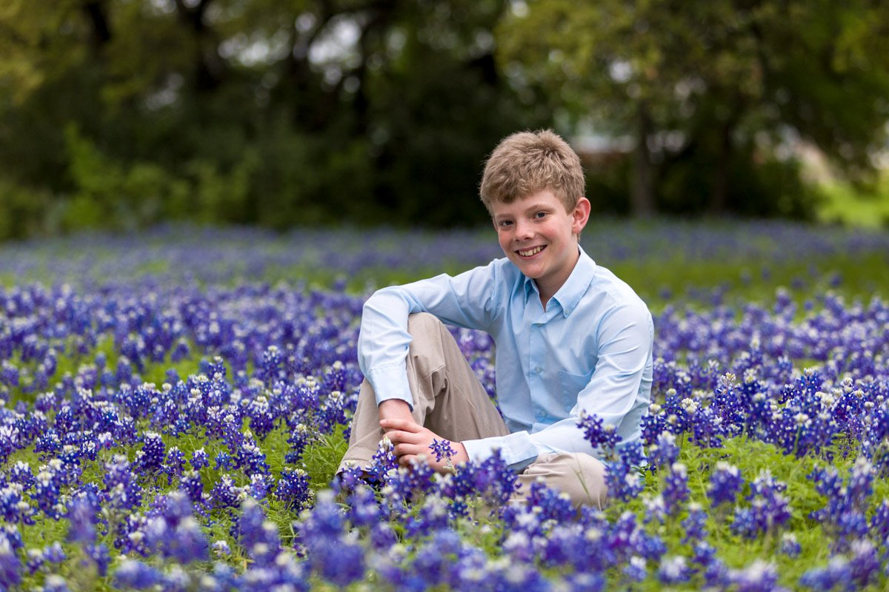
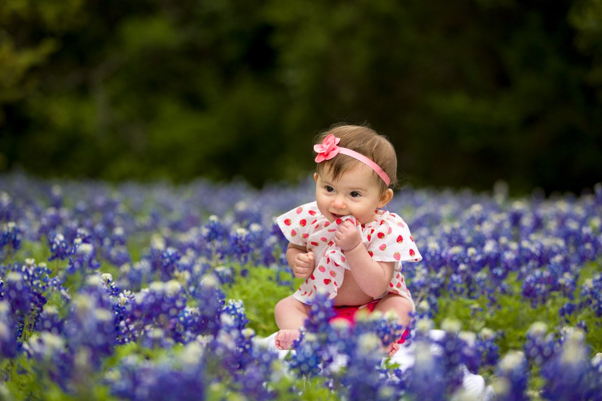
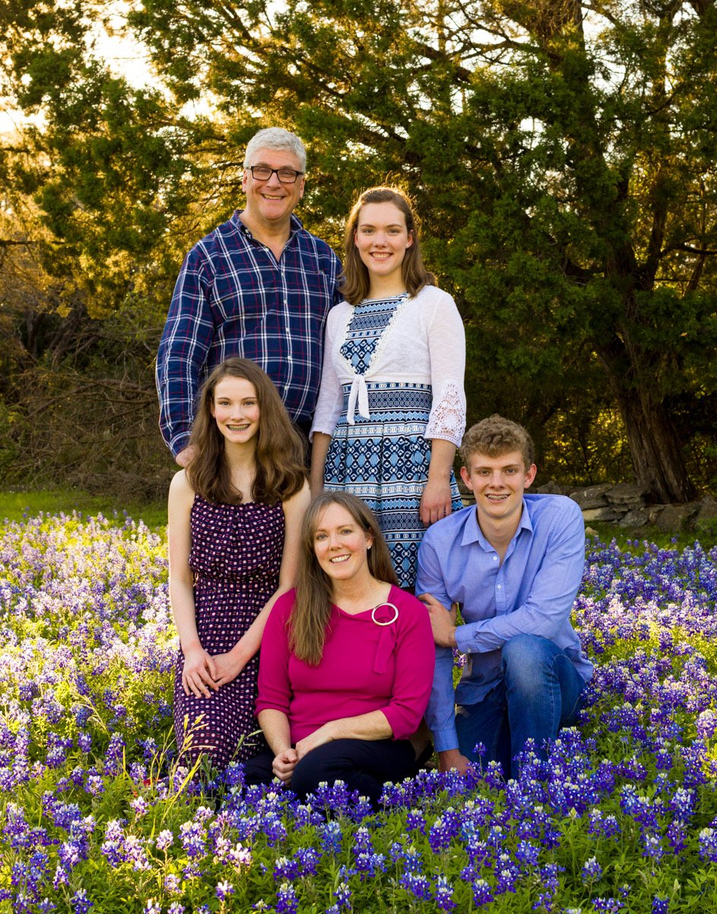

Choose the Time of Day Around Your Youngest
Start with the person who has the least flexibility. A rested, fed toddler at 5:30 will give you far better photographs than one who is overdue for a nap at 2:00 — and no amount of beautiful light makes up for a child who is finished for the day.
In Central Texas, it also means thinking about heat. Late afternoon toward sunset and early morning tend to be kinder on both the light and the temperature, especially from late spring through early fall. We'll help you choose the right window for your location and season when you book.
Coordinate — Don't Match
Matching outfits tend to feel dated and uncomfortable for everyone. A shared palette works better: choose three or four colors that sit well together, and let each person wear their own version of them.
- Pick one anchor color, then add two or three supporting tones — soft neutrals, muted earth colors, or one quiet accent.
- Mix solids with one or two subtle textures or patterns, rather than everyone wearing the same print.
- Avoid large logos, bold graphics, and neon colors, which pull attention away from faces.
- Choose clothes that fit now and that people can sit, run, and hug in. Comfort shows in a photograph.
- Think about the setting. What looks right in an open field may not suit a downtown street.
For more on wardrobe, see our general guide to what to wear →
Quick check: if you lay everyone's outfit on the floor and they look like they belong in the same story — without looking identical — you're there.

Preparing Younger Children
You don't need to rehearse smiles. The photographs families treasure most are rarely the ones where every child looks straight at the camera. They're the ones where a toddler is laughing at his sister, or leaning into a parent mid-sentence.
- Rest and feed children beforehand, ideally with something that won't stain or leave crumbs.
- Tell them what will happen in plain words: "We'll walk around, play a little, and a photographer will take some pictures."
- Skip the "smile!" commands and the bribes that turn into pressure. A little guidance from us usually works better than pleading from you.
- Let them move. A session built around a child's natural energy gives us far more to work with than one that tries to hold them still.
If a child has a rough few minutes, that's normal. We'd rather pause and come back to it than push through.
Teens and Reluctant Participants
A teenager — or a parent — who would rather not be there can shift the mood of an entire session. The best preparation happens before the day: let them help choose their outfit or the location, and be honest about how long it will take. People relax when they feel included rather than managed.
It also helps when the adults aren't visibly anxious. Your mood sets the pace. If you're relaxed, the rest of the family usually follows.

Including Grandparents and Extended Family
A multi-generational photograph is often the one a family wants most and plans least. A few things make it easier:
- Tell us in advance who is coming and which combinations matter most — grandparents with each grandchild, each branch of the family, everyone together — so nothing is missed.
- Choose a location with easy access, flat ground, and places to sit if anyone has trouble standing or walking long distances.
- Photograph grandparents and anyone who tires easily first, while energy is high.
- Give everyone the same arrival time, with a few minutes of cushion built in.
The Day Itself
Arrive a few minutes early so no one starts the session rushed. We like to begin with simple, easy moments — walking, talking, letting everyone settle in — before moving on to anything more composed. By then, the camera is mostly forgotten, and what's left is the family as it actually is.
You don't have to perform. Your only job is to be together.
What to Bring
- Backup outfits, or an extra layer for each child
- Water, and a small snack that won't stain
- A lint roller, wipes, and a small comb or brush
- A comfort item for little ones — a favorite toy or blanket
- Shoes that work for walking between spots
Leave the rest to us.